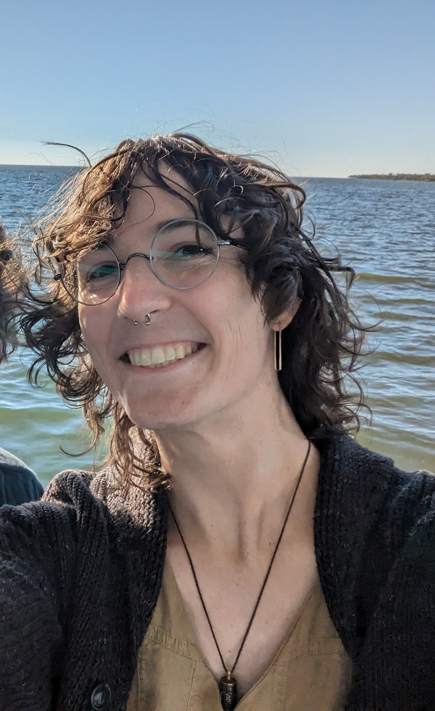

My research is at the intersection of concretely efficient cryptography and machine learning. I am primarily interested in designing methods that use zero-knowledge proofs and secure multiparty computation to audit and verify the trustworthyness of machine learning models.
Cryptographic verification creates an avenue of accountability for ML service providers, even in the presence of misaligned incentives and/or adversarial behavior. It also allows service providers build trust by actively attesting that their models are trustworthy, without revealing any information about user data or proprietary model parameters. My published works in this line include methods for cryptographic verification of fairness using zero-knowledge proofs (ICLR ’23, Alan Turing Institute Top 10 Research Highlight of 2022-23), verified confidentiality and robustness in distributed model training via secure multiparty computation (NeuRIPS ’23), and efficient zero-knowledge proof building blocks (CCS ’21).
I have also worked in data-driven computational biology. I designed an ML method to improve clinical accessibility of mutational-signature-based cancer diagnostics (RECOMB ’21), algorithms for extracting signaling pathways from protein-protein interaction data (PLoS Comp Biol 2019), and analyzed a method for systematic experiment planning (Bioinformatics 2018).
I am an NSF GRFP fellow, and a National Cancer Institute CRTA recipient.
Teaching is the thing that drives me to be an academic. The quality of my teaching is extremely important to me. Below are some of my experiences in undergraduate teaching and mentorship.
“I loved the energy of the lectures and the learning environment, the professor’s enthusiasm in providing help in lab, and the effectiveness of the assignment material at both closely matching the subjects discussed in lecture while providing sufficient practice to reinforce learning. The midterm exam was also extremely well-designed and well- structured - in fact, it felt like one of the most accurately balanced exams I have taken at Reed. I would retain the majority of the course structure and policies - I feel that the course accomplished exactly what it is meant to, with the appropriate scope at all steps of the process, and with effective measures in place to ensure students have a good experience.”
“I liked Olive’s teaching style! She was always super prepared, organized, cheerful, and engaged during lectures and labs. The policy of going and offering help unsolicited during labs was very helpful for folks such as I who struggle asking for help for any reason ever. Asking questions unsolicited during lecture helped for this exact same reason, it never felt like being singled out or stressful as the answer “I don’t know” was never punished. It was clear that she cares, not just whether the students learned the material, but also whether we [were] generally mentally well. I felt respected and appreciated every day I showed up to class, and though I’ve stopped going out of my way to give a 110 percent in college, this class was the one exception.”